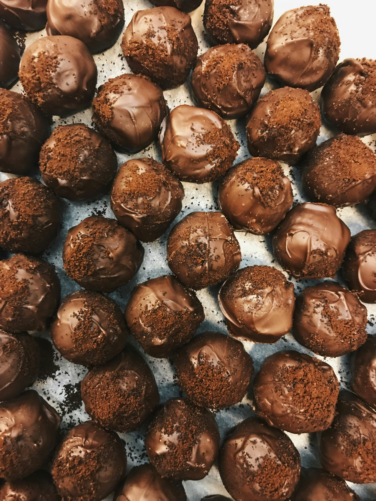

Home > Oreo Balls
Oreo Balls

Description:
This Oreo balls recipe only needs 3 ingredients and no baking.
These chocolate candies are a major hit and perfect for any occasion!
Great for Christmas, Mother's Day or any celebration!
🥚 ingredients:
- 1 package Oreo cookies, crushed
- 1 package cream cheese, at room
temperature
- 1 package vanilla-flavored
almond bark, or as needed
📝 Steps:
- Line a baking sheet with parchment paper.
-
Mix Oreo cookie crumbs and cream cheese together in a bowl; roll into balls and
arrange on the prepared baking sheet. Freeze cookie balls until solid, about 1
hour.
-
Melt almond bark in the top of a double boiler over simmering water, stirring
frequently and scraping down the sides with a rubber spatula to avoid
scorching.
-
Dip cookie balls in the melted almond bark, removing balls using 2 forks to
allow excess bark drip back into double boiler. Arrange coated cookie balls on
the baking sheet; refrigerate until coating is firm, about 10 minutes.